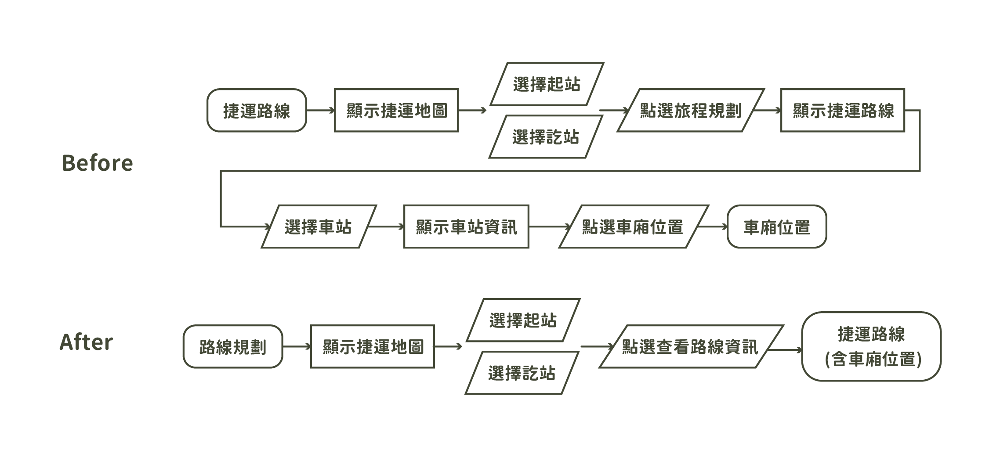
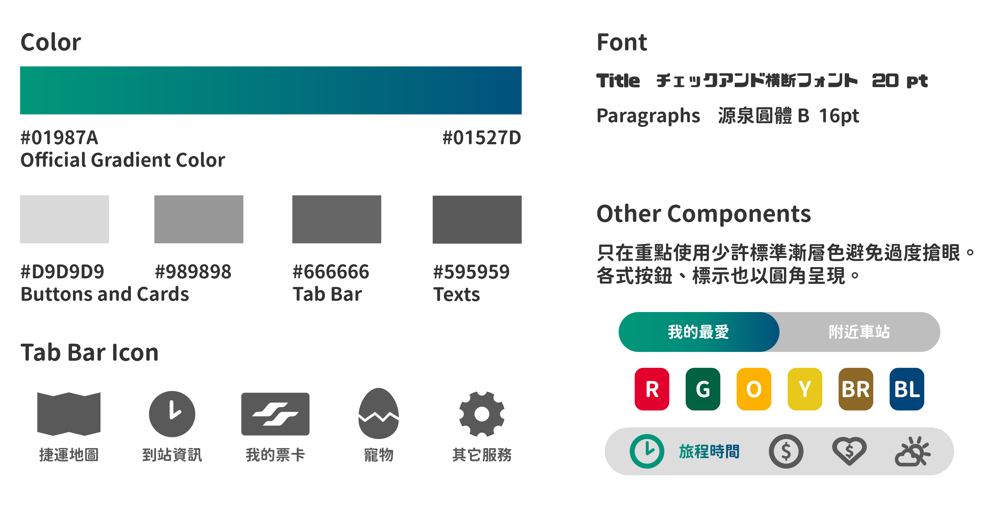
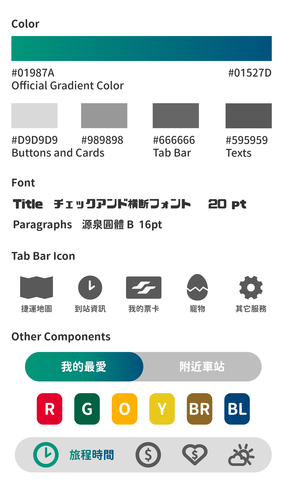

Taipei Metro Hackathon 2024
Project Overview
The challenge was to redesign the Taipei Metro Go app by improving its visual design,
information structure, user experience, and service innovation.
As the main UI/UX designer in a four-person team, I participated in concept development and focused on user research, UX restructuring, interface design, and prototyping. I also contributed to the structure and visual design of the final presentation.
As the main UI/UX designer in a four-person team, I participated in concept development and focused on user research, UX restructuring, interface design, and prototyping. I also contributed to the structure and visual design of the final presentation.
User Research
We started by conducting a user survey and reviewing feedback from the App Store to understand
how people were using the existing Taipei Metro Go app.
We identified 2 key problems by analyzing the survey and feedbacks:
01 — Complex and inefficient interactions
Users found the interface difficult to navigate, with some common tasks requiring unnecessary steps.
02 — Lack of compelling reasons to use the app
Beyond basic transit information, users lacked a strong reason to return to the app as part of their everyday commute.
These findings shaped two design directions:
simplifying the existing experience and introducing services that provide greater everyday value.
We identified 2 key problems by analyzing the survey and feedbacks:
01 — Complex and inefficient interactions
Users found the interface difficult to navigate, with some common tasks requiring unnecessary steps.
02 — Lack of compelling reasons to use the app
Beyond basic transit information, users lacked a strong reason to return to the app as part of their everyday commute.
These findings shaped two design directions:
simplifying the existing experience and introducing services that provide greater everyday value.
UX Strategy
Based on our research findings, I reorganized the app around five core functions,
removing unnecessary complexity and establishing a clearer navigation structure.
I then developed wireframes for each section and mapped key user flows to identify unnecessary steps in the existing experience.
One example was the journey-planning flow, where station and carriage information were previously scattered across multiple screens. I redesigned the flow so users could access relevant route and carriage information with fewer steps.
I then developed wireframes for each section and mapped key user flows to identify unnecessary steps in the existing experience.
One example was the journey-planning flow, where station and carriage information were previously scattered across multiple screens. I redesigned the flow so users could access relevant route and carriage information with fewer steps.

Before / After flow diagram ofthe action "search for carriage location"
Visual System
To keep the redesign aligned with Taipei Metro’s identity,
I studied its 2021 brand identity guidelines and translated the visual language into a lightweight UI system.
Instead of using the brand gradient across large areas, I applied it selectively to key elements such as the logo and headings.
Rounded typography, controls, cards, and icons were used to complement the flowing forms of the updated brand identity while keeping the interface visually lightweight.
Instead of using the brand gradient across large areas, I applied it selectively to key elements such as the logo and headings.
Rounded typography, controls, cards, and icons were used to complement the flowing forms of the updated brand identity while keeping the interface visually lightweight.


Design Solutions
① Transit Card as the Core Experience
The digital transit card ranked as the most requested feature in our survey, so we made it a core part of the experience.
Frequently used card and account features were prioritized, while less essential functions were reorganized under “Other Services” for easier access.
The digital transit card ranked as the most requested feature in our survey, so we made it a core part of the experience.
Frequently used card and account features were prioritized, while less essential functions were reorganized under “Other Services” for easier access.


② Arrival Information & Quick Actions
Arrival information was redesigned with a card-based layout for easier scanning.
Favorites and Get-off Reminders were added as quick actions, allowing users to access these features without switching screens.
Arrival information was redesigned with a card-based layout for easier scanning.
Favorites and Get-off Reminders were added as quick actions, allowing users to access these features without switching screens.
③ Journey Planning & Carriage Information
The journey-planning flow was redesigned to surface useful information more directly.
Users can now see which carriage is closest to specific exits or station facilities, without having to open an additional station page.
The journey-planning flow was redesigned to surface useful information more directly.
Users can now see which carriage is closest to specific exits or station facilities, without having to open an additional station page.


Presentation
In addition to the product experience, I worked on the structure and visual design of the final pitch presentation.
The goal was to turn our research findings, design decisions,
and new service concepts into a clear visual narrative that the judges could quickly understand within a limited presentation time.
Selected slides from the final pitch presentation, featuring the sections I contributed to.
Result / Takeaways
We won 1st Place at the 2024 Taipei Metro Hackathon.
This experience taught me that a strong idea also needs strong storytelling. Clear visual communication can make a concept more compelling and memorable.
This experience taught me that a strong idea also needs strong storytelling. Clear visual communication can make a concept more compelling and memorable.